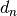
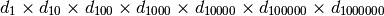

Champernowne’s constant¶
Problem 40
An irrational decimal fraction is created by concatenating the positive integers:
0.123456789101112131415161718192021...
It can be seen that the 12th digit of the fractional part is 1.
If  represents the nth digit of the fractional part, find the value of the following expression.

Solution
We’ll use euler04.digits() and euler05.prod().
from euler04 import digits
from euler05 import prod
Generate a stream of digits.
def digitStream( limit ):
"""
>>> from euler40 import digitStream
>>> s= list(digitStream(32))
>>> s[11]
1
>>> s
[1, 2, 3, 4, 5, 6, 7, 8, 9, 1, 0, 1, 1, 1, 2, 1, 3, 1, 4, 1, 5, 1, 6, 1, 7, 1, 8, 1, 9, 2, 0, 2, 1]
"""
n= 1
dFed= 0
while dFed < limit:
for d in digits(n):
yield d
dFed += 1
n += 1
Pick selected digits out of the stream of digits. We avoid materializing a 1,000,000 entry sequence as a single list. Instead we filter the sequence to yield a new sequence.
def selectedDigits(limit):
"""Selected digits of the digit stream
>>> from euler40 import selectedDigits
>>> list( selectedDigits(1000002) )
[1, 1, 5, 3, 7, 2, 1]
"""
for pos, digit in enumerate(digitStream(limit)):
if pos+1 in ( 1, 10, 100, 1000, 10000, 100000, 1000000 ):
yield digit
Test the module components.
def test():
import doctest
doctest.testmod(verbose=0)
Compute the answer.
def answer():
return prod( list( selectedDigits(1000002) ) )
Confirm the answer.
def confirm(ans):
assert 210 == ans, "{0!r} Incorrect".format(ans)
Create some output.
if __name__ == "__main__":
test()
ans= answer()
confirm(ans)
print( "The product of digits 1, 10, 100, 1000, 10,000, 100,000 and 1,000,000:", ans )